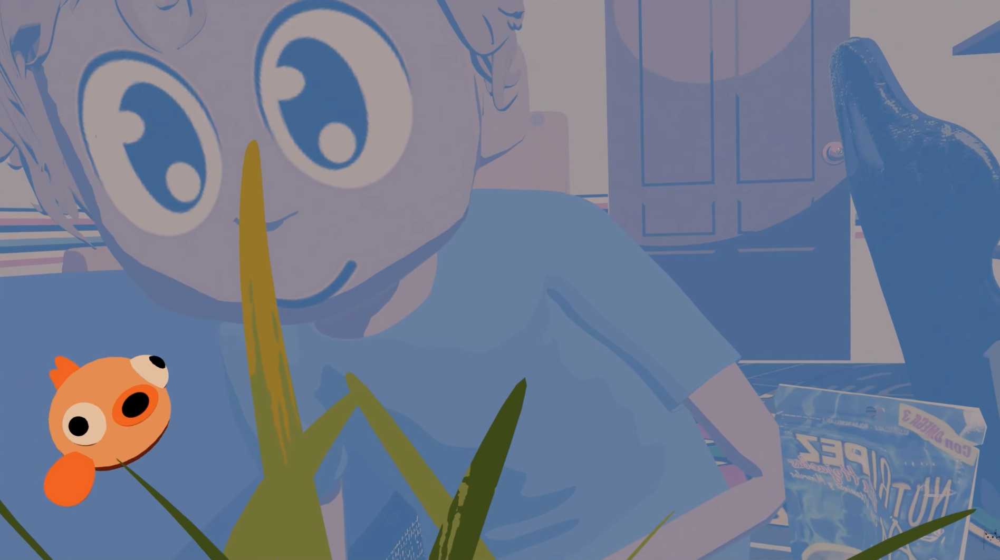
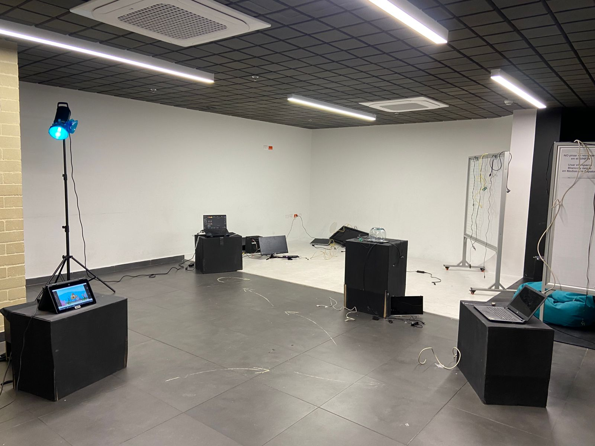
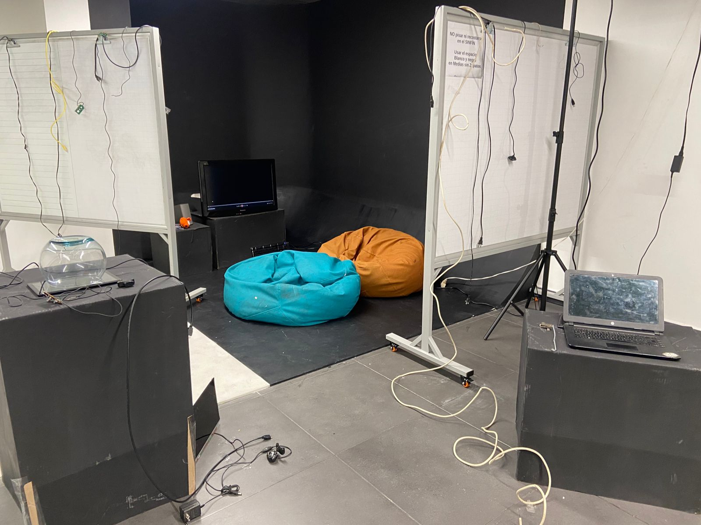
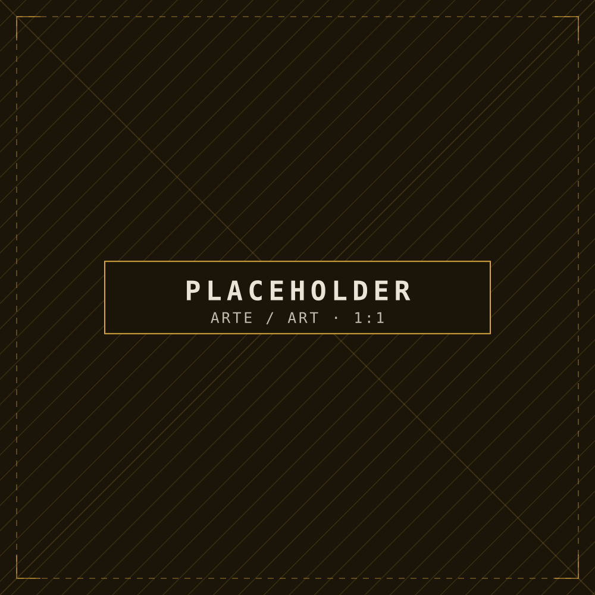
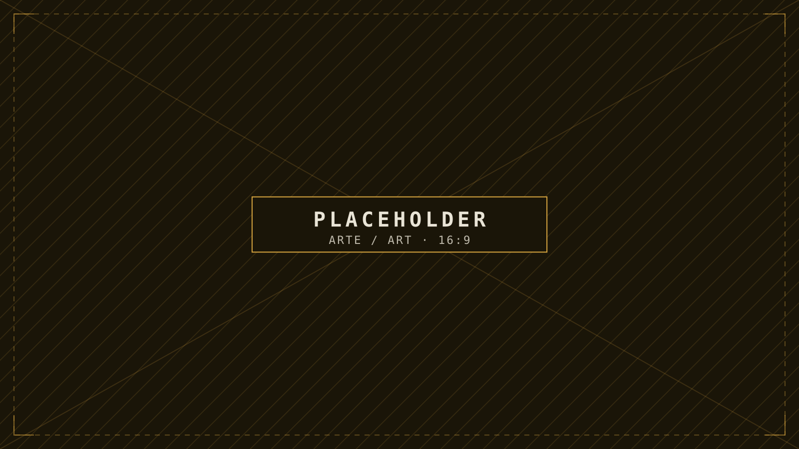

Imagen provisional
Proyectos / JA-02
Golden Tec
Instalación audiovisual
Instalación interactiva que combina cortometraje, recursos audiovisuales y tecnologías digitales para explorar críticamente los efectos de la hiperconectividad en la identidad y las emociones de niños y jóvenes. A través de la experiencia de Alejandro, la obra invita a reflexionar sobre la paradoja de estar siempre conectados y, al mismo tiempo, experimentar aislamiento y desconexión emocional.
01Pieza principal
Cortometraje

02Animación
Teaser

03Concepto
Descripción conceptual
Golden Tec: Cámara Interactiva es una instalación interactiva que representa, de manera crítica y sensorial, el impacto de la hiperconectividad en la vida de niños y jóvenes. A través de un lenguaje visual y narrativo, la obra recrea el entorno digital en el que Alejandro se ve envuelto, evidenciando la desconexión emocional que puede surgir de la constante interacción virtual. Con una estética fragmentada y caótica, la instalación refleja la ansiedad, la confusión y la soledad asociadas a la aparente conexión digital. La obra invita a cuestionar cómo la tecnología influye en la construcción de la identidad y las relaciones humanas, generando un espacio de contemplación crítica sobre la paradoja de estar más conectados que nunca y, al mismo tiempo, sentirnos más solos.
04Espacio
Fotografía de la instalación


05Proceso
Proceso creativo y decisiones visuales

06Información
Información técnica
- Formato
- Por confirmar
- Duración
- Por confirmar
- Espacio / dimensiones
- Por confirmar
- Equipo
- Por confirmar
- Créditos
- Por confirmar
- 2025
- Por confirmar
Marcador Aún no hay nada completado: llena solo lo que sea exacto.
07Documentación
Documentación de la obra final

¿Te interesa esta obra? Escríbeme, o encuentra el trabajo en otros espacios.